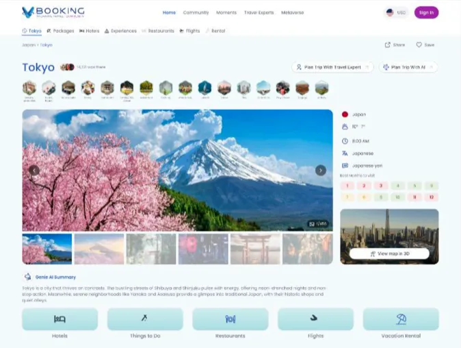
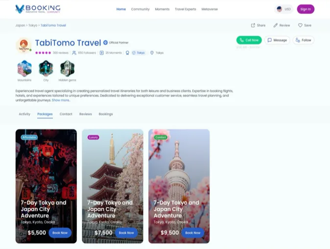

B2C · Travel Marketplace
VBooking Community AI trip planning and a marketplace for real travel experts

Context
On the traveler side, VBooking was solving a trust problem: people don't always know who to trust for travel advice, and assembling a full trip — flights, hotels, activities — usually means jumping between many disconnected sites and sources.
Problem
Travelers dealt with limited personalization, unreliable reviews with no real access to expert guidance, difficulty putting together a complete holiday package in one place, and hidden fees that surfaced late in the process. The gap wasn't information — it was trust and a lack of one recognized route to a real answer.
My Role
Lead UX/UI designer, solely responsible for the end-to-end design of the Community platform, mobile app, AI trip planner, and Ambassador and Travel Expert profiles.
Key Decisions
- Gave travelers three ways into planning — AI, manual, or a real travel expert — from the same entry point, after testing three layouts for surfacing this choice. A single buried link meant people defaulted to browsing alone instead of asking for help; a prominent, labeled set of options fixed that.
- Designed the AI planner to produce a full day-by-day itinerary with a map before ever asking for payment, then let the traveler "Send Request" to turn that draft into a real, human-priced offer — so people got AI-level personalization without losing the trust of a real quote from a real person.
- Turned destination pages into one hub — hotels, activities, restaurants, car rental, and articles together — instead of scattering them across sections, cutting the "assembling a trip from five sources" feeling travelers complained about.
- Gave every travel expert and ambassador a public profile with reviews, followers, and their own package listings, so "who do I trust" could be answered with the same social proof people already use to judge anyone online.
- Added "Join" on existing group itineraries, so someone who didn't want to plan from zero could join a trip that was already built and priced.
- Tied trip photos and videos to specific itinerary days rather than a generic feed, keeping travel content anchored to real, verifiable trips instead of disconnected posts.


Outcome
The Community platform also shipped as a live beta, active but not yet public. Early use by real travelers and ambassadors validated the three-entry-point approach to planning a trip, and it's now being refined ahead of full release.
Reflection
Working on both platforms at once made it clear that a traveler, an ambassador, and a travel agent are three different people even when they're looking at the same trip — the same UI would have flattened all three. Even inside Community alone, travelers and travel experts needed genuinely different flows: one browsing and trusting, one managing and selling. Competitor analysis across the space is what shaped where VBooking chose to differentiate — pairing AI planning with a real human behind every quote, instead of picking one or the other.